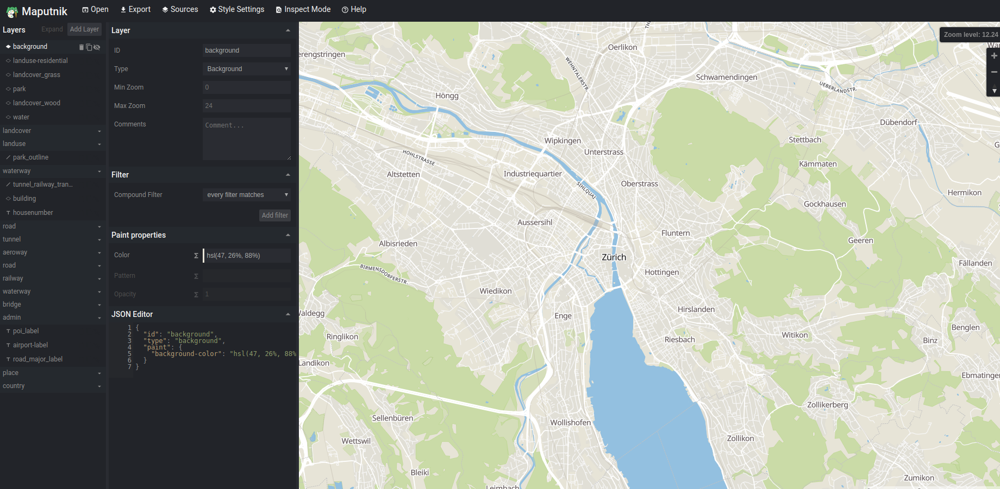
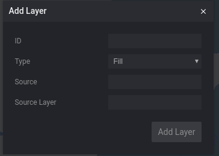

Cómo simbolizar teselas vectoriales
Maputnik
Es un editor visual gratuito y abierto para estilos Mapbox GL dirigidos tanto a desarrolladores como a diseñadores de mapas.
Se puede utilizar en línea en Maputnik editor (todo se guarda en el almacenamiento local) ó se puede hacer una instalación local.
Instalación
Si vamos a la página de Releases de Maputnik aparece que la última versión es la v1.0.2. Realmente existe una versión v1.1.0 que está en la página de releases pero que no está marcada como la última versión.
Descagaremos la versión v1.1.0 que es la última versión disponible para la fecha de este taller.
1 2 | wget https://github.com/maputnik/editor/archive/v1.1.0.tar.gz tar -xzvf archivo.tar.gz |
Vamos a la carpeta editor-1.1.0 creada al descomprimir el archivo descargado he instalamos las dependencias del Maputnik
1 2 | cd editor-1.1.0
npm install
|
Al finalizar la instalación comprobamos que no aparezca ningún error (pueden aparecer algunos WARN) y arrancamos el servidor de Maputnik
1 | npm start |
Abrir el navegador y escribir http://localhost:8888 y comprobar que aparece la página del Maputnik
 Maputnik
Estilizar el mbtiles
Por defecto Maputnik nos
Agregar un origen de datos (Source)
En el editor del Maputnik en la barra de menú seleccionamos la opción de Source para desplegar el diálogo de gestionar fuentes de datos. En la parte inferior del diálogo esta el apartado para agregar una fuente nueva de datos Add New Source. Para agregar nuestra fuente de datos mbtiles tenemos dos opciones.

Maputnik agregar origen de datos
- Vector (TileJSON URL)
Source ID: identificador único de la capa: es el nombre que utilizaremos como referencia en las capas. En nuestro caso pondremos natural_earth
Source Type: tipo de la fuente de datos. Seleccionar la opción de Vector (TileJSON URL)
TileJSON URL: url del archivo JSON de descripción de la fuente. Pondremos la url de nuestro TileServerGL http://localhost:8181/data/natural_earth.json
- Vector (XYZ URL)
Source ID: identificador único de la capa: es el nombre que utilizaremos como referencia en las capas. En nuestro caso pondremos natural_earth_1
Source Type: tipo de la fuente de datos. Seleccionar la opción de Vector (XYZ URL)
TileJSON URL: url del servicio de teselas. Pondremos la url de nuestro TileServerGL http://localhost:8181/data/natural_earth/{z}/{x}/{y}.pbf
Min Zoom: 0
Max Zoom: 5
Agregar sprite y glyph
En el editor de Maputnik en la barra de menú seleccionamos la opción de Style Settings para desplegar el diálogo de gestionar la configuración del estilo.

Maputnik configuración de estilo
Name: nombre del estilo. En nuestro caso pondremos natural earth
Sprite URL: proporciona una plantilla para cargar imágenes pequeñas para usar en la representación de estilo del fondo, patrones de relleno, patrones de líneas e imagenes de iconos. En nuestro caso pondremos "https://openmaptiles.github.io/osm-bright-gl-style/sprite"
Glyphs URL: proporciona una plantilla para cargar conjuntos de glifos formato PBF. Aquí es donde se cargan las diferentes fuentes. En nuestro caso pondremos "https://free.tilehosting.com/fonts/{fontstack}/{range}.pbf?key=RiS4gsgZPZqeeMlIyxFo"
Agregar una capa
En el editor de Maputnik presionamos el botón de Add Layer para desplegar el diálogo de agregar capa al mapa.

Maputnik agregar capa
ID: identificador único de la capa. Pondremos oceanos
Type: tipo de capa. Seleccionar la opción de Fill ya que la capa es de tipo polígono
Source: identificador del origen de datos. En nuestro caso pondremos natural_earth
Source Layer: identificador de la capa dentro del origen de datos. Pondremos ocean para agregar la capa de los océanos.
Estilizar una capa según un campo
En esta versión de maputnik (v1.1.0) no está implemantado el estilo basado en expressiones. Se pueden utilizar los stops que actualmente estan deprecated para aplicar estilos según el nivel de zoom. En nuestro caso tendremos que utilizar filtros para poder estilizar una capa según un valor de un campo de texto.
-
Agregar la capa de lineas de Ferry. Presionar el botón de Add Layer y rellenar el formulario con la siguiente información:
ID: ferrys
Type: Line ya que la capa es de tipo línea
Source: natural_earth
Source Layer: roads para agregar la capa de carreteras que también contiena las lineas de ferry.
-
Vemos que aparecen todas las carreteras en el mapa.
-
Filtar la información. Selección la capa de ferrys y en el apartado de Filter presionar el botón de Add filter. En registro que aparece poner la siguiente información:

Maputnik agregar filtro a una capa
1 2 3 4 5 | * Cambiar donde dice name por *type* * Dejar el selector de comparación en *==* * Escribir en el campo de valor (que está vacio) *Ferry Route* |
Comprobar que sólo aparacen las líneas de Ferry en el mapa.
Question
Hacer lo mismo para agregar la capa de carreteras principales(Major Highway) y secundarias(Secondary Highway).
Etiquetar una capa
-
Agregar la capa de ciudades. Presionar el botón de Add Layer y rellenar el formulario con la siguiente información:
ID: ciudades_etiquetas
Type: Symbol ya que queremos que sea de tipo texto
Source: natural_earth
Source Layer: cities para agregar la capa de ciudades.
-
Agregar el campo por el que se quiere etiquetar. Seleccionar la capa de ciudades y en el apartado de Text layout properties en el campo Field escribir {nombre del campo}. En nuestro caso debemos escribir {NAME}.
-
Estilizar las etiquetas. En el apartado de Text paint properties podemos definir el estilo de las etiquetas. Para los textos podemos definir un Halo para que el teto destaque mejor en nuestro mapa.
Utilizar un icono para simbolizar nuestra capa
-
Agregar la capa de aeropuertos. Presionar el botón de Add Layer y rellenar el formulario con la siguiente información:
ID: aeropuertos
Type: Symbol ya que queremos que sea de tipo texto
Source: natural_earth
Source Layer: airports para agregar la capa de aeropuertos.
-
Agregar el icono. Selecccionar la capa de aeropuertos y en el apartado de Icon layout properties escribir en el campo Image airport_11. Este nombre debe coincidir con alguna imagen definida en el sprite.
-
Comprobar que aparecen los aeropuertos en el mapa
Tip
Aqui puede ver la lista de los nombres de las imágenes del sprite que estamos utilizando https://github.com/openmaptiles/osm-bright-gl-style/tree/master/icons.
Ejercicio
Agregar y aplicar estilo al resto de capas del natural_earth.mbtiles
Exportar el estilo creado
En el editor de Maputnik en la barra de menú seleccionamos la opción de Export para desplegar el diálogo de exportación del estilo.
En el dialogo presionamos el boton de Download para descargar el estilo en nuestro ordenador.
Descargamos el archivo y lo renombramos a natural_earth.json. Luego lo movemos a la carpeta data
Dentro de la carpeta data crear un fichero config.json. Para más detalles http://tileserver.readthedocs.io/en/latest/config.html#
1 2 3 4 5 6 7 8 9 10 11 12 13 14 15 | { "styles": { "natural-earth": { "style": "natural_earth.json", "tilejson": { "type": "overlay" } } }, "data": { "natural_earth": { "mbtiles": "natural_earth.mbtiles" } } } |
Ejecutar el tileserver utilizando el archivo de configuración creado
1 | tileserver-gl-light -c config.test.json -p 8181
|
Abrir el navegador y escribir http://localhost:8181. Aparecerá la página del TileServer donde podemos comprobar nuestro estilo presionando el botón de Vector
Modificar el archivo index.html para que el visor de mapa para cargue los datos de Natural Earth con el estilo creado en Maputnik
1 2 3 4 5 6 7 8 9 10 11 12 13 14 15 16 17 18 19 20 21 22 23 24 25 26 27 28 29 30 31 32 33 34 35 36 | <!DOCTYPE html> <html> <head> <meta charset="UTF-8"> <meta name="viewport" content="width=device-width, initial-scale=1"> <title>Mapa VT</title> <link rel='stylesheet' href='https://api.tiles.mapbox.com/mapbox-gl-js/v0.44.1/mapbox-gl.css' /> <script src='https://api.tiles.mapbox.com/mapbox-gl-js/v0.44.1/mapbox-gl.js'></script> <link href='https://mapbox-gl-inspect.lukasmartinelli.ch/dist/mapbox-gl-inspect.css' rel='stylesheet' /> <script src='https://mapbox-gl-inspect.lukasmartinelli.ch/dist/mapbox-gl-inspect.min.js'></script> <style> html, body { margin: 0; height: 100%; } </style> </head> <body id='map'> <script> var map = new mapboxgl.Map({ container: 'map', // id del elemento HTML que contendrá el mapa style: 'http://localhost:8181/styles/natural-earth/style.json', // Ubicación del estilo center: [2.175, 41.39], // Ubicación inicial zoom: 13, // Zoom inicial bearing: -45, // Ángulo de rotación inicial hash: true // Permite ir guardando la posición del mapa en la URL }); // Agrega controles de navegación (zoom, rotación) al mapa: map.addControl(new mapboxgl.NavigationControl()); // Agregar el control de inspección map.addControl(new MapboxInspect()); </script> </body> </html> |
Estilo basado en datos (data-driven style)
El estilo basado en datos le permite estilizar los datos en función de sus propiedades. Por ejemplo, cambiar el radio de un círculo en función de la cantidad de clientes, cambiar el color de un polígono de estado según la población o usar la lógica condicional para crear etiquetas bilingües.
Para crear estilos basados en datos debemos usar las Mapbox GL JS expressions. En la especificación de estilo de Mapbox, el valor de cualquier propiedad de diseño, propiedad de estilo o filtro se puede especificar como una expresión. Las expresiones definen cómo se combinan uno o más valores de propiedad y / o el nivel de zoom actual utilizando operaciones lógicas, matemáticas, de cadena o de color para producir el valor de propiedad de estilo apropiado o la decisión de filtro.
Para más información y ejemplos https://www.mapbox.com/help/how-map-design-works/#data-driven-styles
Crear un estilo basado en datos
Copiar el estilo natural_earth.json en un fichero llamado natural_earth_2.json
Estilo basado en valores concretos de una propiedad
Editar el fichero natural_earth_2.json y eliminar las capas con id secundarias, principales y ferrys
Entre la capa con id land y la capa con id aeropuertos crear una capa con id roads. El color de las líneas de esta capa varia dependiendo del valor de la propiedad type.
1 2 3 4 5 6 7 8 9 10 11 12 13 14 15 16 17 18 19 20 21 22 23 24 25 26 | { "id": "roads", "type": "line", "source": "local", "source-layer": "roads", "layout": { "visibility": "visible" }, "paint": { "line-color": [ "match", [ "get", "type" ], "Secondary Highway", "rgba(206, 32, 79, 1)", "Ferry Route", "rgba(138, 154, 241, 1)", "Major Highway", "rgba(20, 52, 232, 1)", "#000000" ], "line-width": 2 } }, |
Estilo basado en el nivel del zoom
Editar el fichero natural_earth_2.json modificar la capa ciudades_etiquetas para cambiar el tamaño del texto basado en el nivel de zoom del mapa y en la propiedad SCALERANK
1 2 3 4 5 6 7 8 9 10 11 12 13 14 15 16 17 18 19 20 21 22 23 24 25 26 27 28 29 30 31 32 33 34 35 36 37 38 39 40 41 42 43 44 45 46 47 48 49 50 51 52 53 54 55 56 57 58 59 60 61 62 63 64 65 66 67 68 69 70 71 72 73 74 75 76 77 78 79 80 81 82 | { "id": "ciudades_etiquetas", "type": "symbol", "source": "local", "source-layer": "cities", "layout": { "symbol-placement": "point", "text-field": "{NAME}", "visibility": "visible", "text-anchor": "bottom", "text-offset": [0, -1], "text-size": [ "step", ["zoom"], [ "case", [ "<", [ "number", ["get", "SCALERANK"] ], 3 ], 18, 0 ], 5, [ "case", [ "<=", [ "number", ["get", "SCALERANK"] ], 2 ], 20, [ "<=", [ "number", ["get", "SCALERANK"] ], 5 ], 14, 10 ], 8, [ "case", [ "<=", [ "number", ["get", "SCALERANK"] ], 2 ], 24, [ "<=", [ "number", ["get", "SCALERANK"] ], 5 ], 18, 14 ] ] }, "paint": { "text-halo-color": "rgba(253, 253, 253, 1)", "text-halo-width": 5, "text-color": "rgba(16, 16, 16, 1)", "text-halo-blur": 2 } } |
Estilo basado en una propiedad
Crear una capa con id ciudades y de tipo circle entre las capas aeropuertos y la capa ciudades_etiquetas. En esta nueva capa el tamaño del circulo utilizará directamente el valor de la propiedad SCALERANK
1 2 3 4 5 6 7 8 9 10 11 12 13 14 15 16 17 18 19 | { "id": "ciudades", "type": "circle", "source": "local", "source-layer": "cities", "layout": { "visibility": "visible" }, "paint": { "circle-color": [ "match", ["get", "ADM0CAP"], 0, "hsl(285, 75%, 68%)", "hsl(0, 96%, 48%)" ], "circle-radius": ["-", 15, ["get","SCALERANK"]] } }, |
Agregar el nuevo estilo al fichero de configuración config.json del tileserver-gl
1 2 3 4 5 6 7 8 9 10 11 12 13 14 15 16 17 18 19 20 21 | { "styles": { "natural-earth": { "style": "natural_earth.json", "tilejson": { "type": "overlay" } }, "natural-earth-2": { "style": "natural_earth_2.json", "tilejson": { "type": "overlay" } } }, "data": { "natural_earth": { "mbtiles": "natural_earth.mbtiles" } } } |
Parar Ctrl+c y arrancar el tileserver utilizando el archivo de configuración creado
1 | tileserver-gl-light -c config.test.json -p 8181
|
Modificar el archivo index.html para que el visor de mapa para cargue los datos de Natural Earth con el nuevo estilo creado
1 2 3 4 5 6 7 8 9 10 11 12 13 14 15 16 17 18 19 20 21 22 23 24 25 26 27 28 29 30 31 32 33 34 35 36 | <!DOCTYPE html> <html> <head> <meta charset="UTF-8"> <meta name="viewport" content="width=device-width, initial-scale=1"> <title>Mapa VT</title> <link rel='stylesheet' href='https://api.tiles.mapbox.com/mapbox-gl-js/v0.44.1/mapbox-gl.css' /> <script src='https://api.tiles.mapbox.com/mapbox-gl-js/v0.44.1/mapbox-gl.js'></script> <link href='https://mapbox-gl-inspect.lukasmartinelli.ch/dist/mapbox-gl-inspect.css' rel='stylesheet' /> <script src='https://mapbox-gl-inspect.lukasmartinelli.ch/dist/mapbox-gl-inspect.min.js'></script> <style> html, body { margin: 0; height: 100%; } </style> </head> <body id='map'> <script> var map = new mapboxgl.Map({ container: 'map', // id del elemento HTML que contendrá el mapa style: 'http://localhost:8181/styles/natural-earth-2/style.json', // Ubicación del estilo center: [2.175, 41.39], // Ubicación inicial zoom: 13, // Zoom inicial bearing: -45, // Ángulo de rotación inicial hash: true // Permite ir guardando la posición del mapa en la URL }); // Agrega controles de navegación (zoom, rotación) al mapa: map.addControl(new mapboxgl.NavigationControl()); // Agregar el control de inspección map.addControl(new MapboxInspect()); </script> </body> </html> |